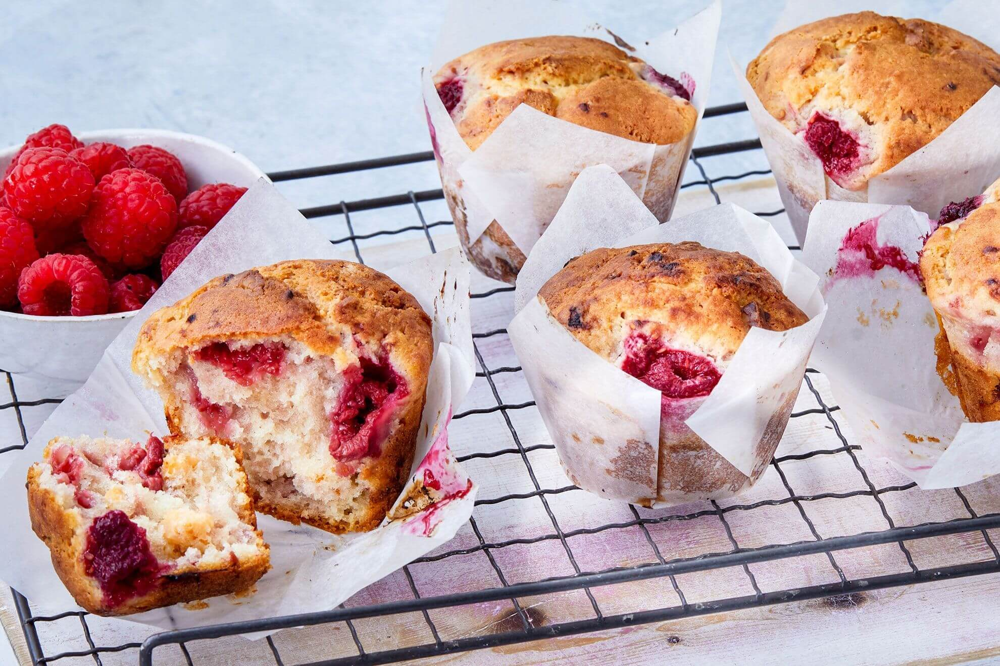

White Chocolate Raspberry Muffins

Baking Time: 30 minutes
Ingredients
Steps
- Preheat oven to 180°C and grease a muffin tin with butter or spray oil.
- Sift flour into a large bowl and stir in the sugars to mix evenly.
- In another bowl mix together the egg, lemon zest, butter, buttermilk and choc chips and add flour mixture with the raspberries.
- Spoon into muffin tin and bake for 20 minutes or until golden.
- Remove from oven and allow to cool for a few minutes before turning out onto a wire rack to cool completely.